작업 흐름
- 입력
- 이야기 · 대본 · 사이트 글을 20–60초 장면으로 나누고, 장면마다 의미에 맞는 화풍이나 키트 선택
- 장면
- 장면마다 HTML 파일 한 개.
seek(t)로 어느 시점의 프레임이든 같은 그림 - 사운드
- ElevenLabs 음악 · 효과음 큐를 장면 타임라인에 믹스
- 출력
- MP4 1920×1080 · 1080×1920, 영상 파일 없이 재생하는 웹 플레이어(「한눈에 보는 성경 이야기」 13분 기준 약 10 MB)
- 다국어
- 번역 파일 · 폰트 교체 · RTL. 장면 파일은 바꾸지 않음
cd canvas-film/examples/hello
node ../../scripts/render.mjs h --scene dawn --stills 3,8
python3 ../../scripts/publish.py # → site/ (라이브 플레이어)요구 사항: Node + Playwright Chromium, ffmpeg, Python 3. 단계별 순서는 SKILL.md에 있습니다.
샘플 · 21가지 화풍
「한눈에 보는 성경 이야기」 영상의 21개 장면을 영상 순서대로 놓았습니다. 장면마다 의미에 맞는 화풍을 골라 모두 Canvas 2D로 그렸습니다. 카드를 누르면 새 탭에서 그 장면부터 영상을 재생합니다. 화풍별로 그리는 법은 STYLES.md에 있습니다.
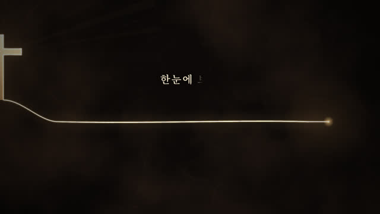
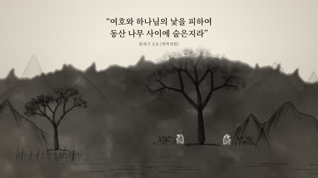
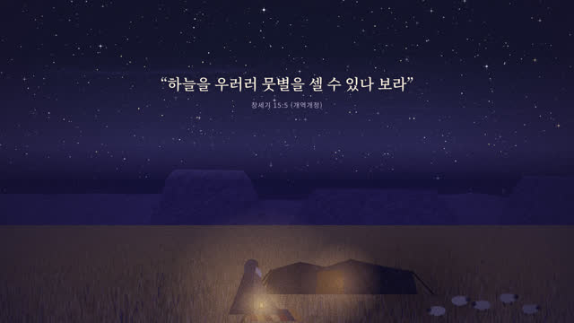
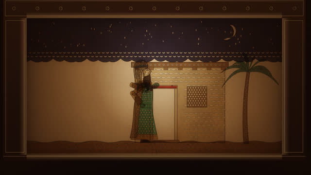
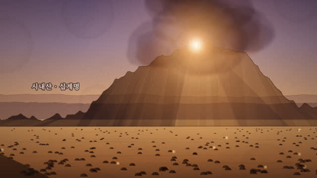
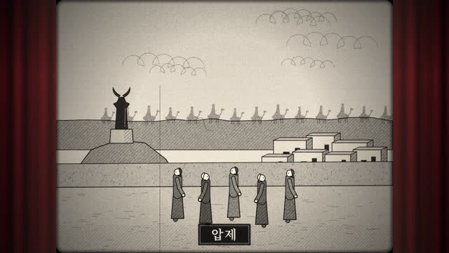
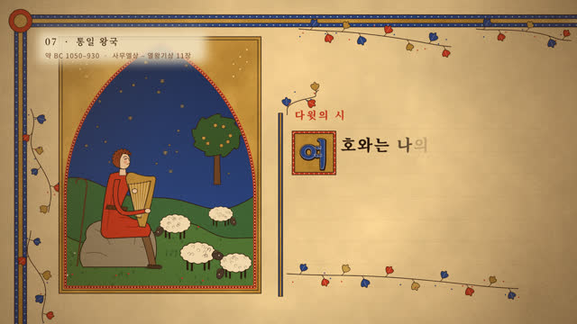
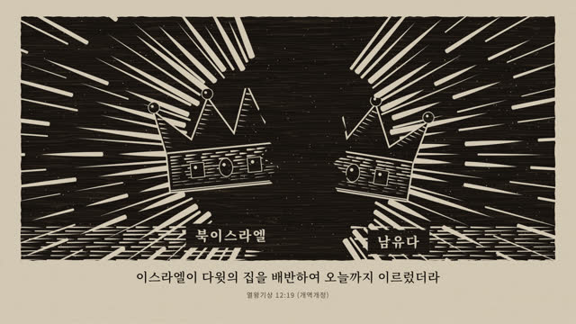
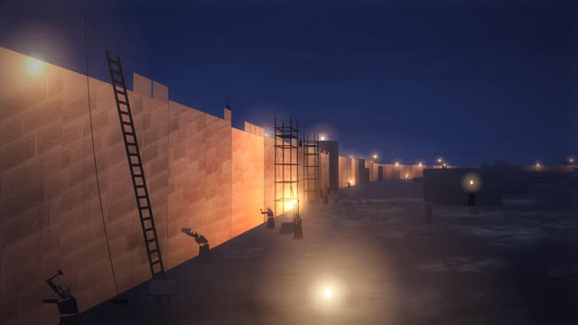
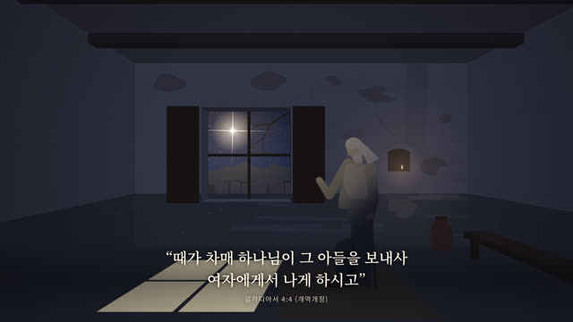
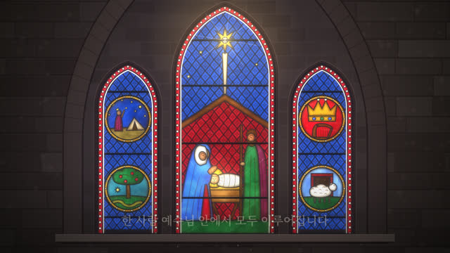
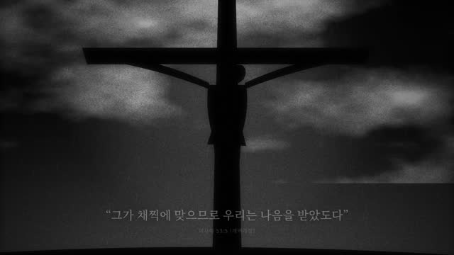
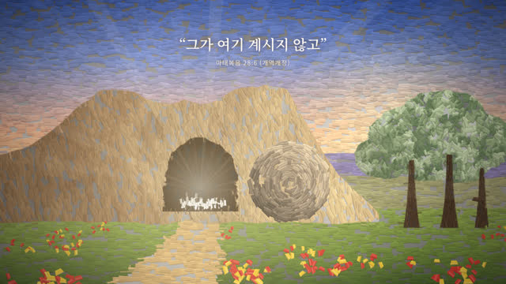
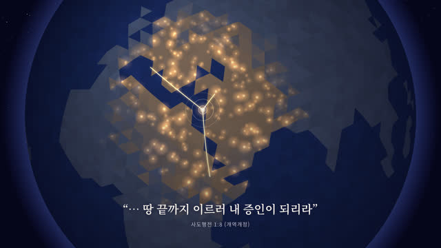
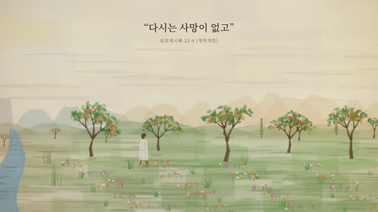
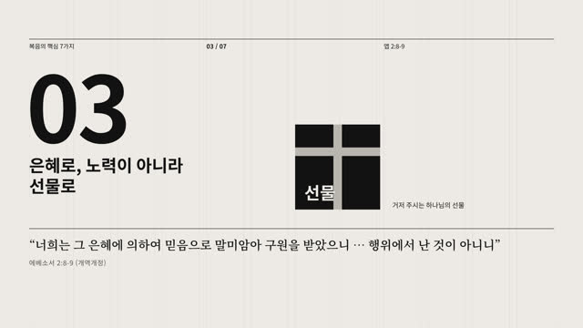
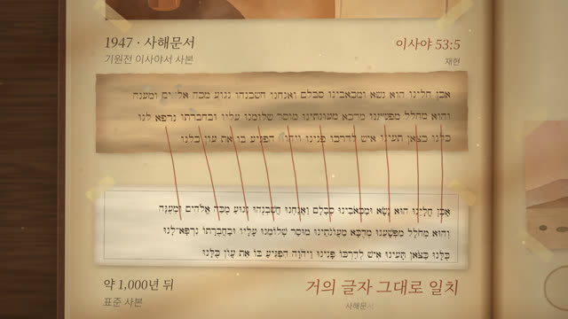
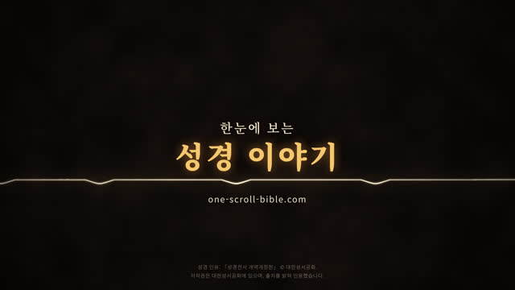
키트 · 35가지
키트는 한 가지 화풍을 다시 쓸 수 있게 묶은 것입니다. 종이 결, 빛, 오린 종이, 빛나는 막 같은 재료와 그리는 순서를 함수로 담고, 이야기는 담지 않습니다. 새 영상은 python3 canvas-film/scripts/from-kit.py my-film --kit <slug>로 시작해 그 영상의 그림을 키트로 그립니다. 템플릿 28개는 같은 씨앗 이야기(걸어와 무릎 꿇고 씨앗을 심고 기다리면 14초에 강조색 싹이 오르고 18초에 일어섬, 26초 엔드 카드, 30초)를 그려서 나란히 비교할 수 있고, 처음 네 키트와 「침묵의 400년」 세 키트는 각자의 짧은 자리표시 이야기를 그립니다. 카드를 누르면 새 탭에서 그 템플릿이 브라우저에서 바로 그려집니다(세로, 소리 없음). 키트 목록과 쓰는 법은 kits/README.md에 있습니다.
새로 만든 키트 6 · 2026-10
prompt-motion.com 갤러리에서 본 네 가지 룩과 GitHub 만화 소스 21곳 조사, 참고 일러스트 한 장에서 시작해 렌더러는 새로 짰습니다. 「쭈꾸미 한 접시」(examples/jjukkumi)는 pixelsea · recipecard · shadowstage · diorama로, 같은 이야기의 기존 키트판(examples/jjukkumi-kits)은 ukiyoe · mograph · hopper · risoline으로, 「도넛 가게 마감까지 3분」(examples/sketchride)은 sketchanime로 그렸습니다. webtoon 키트로 영상 한 편을 만들 때는 motion-webtoon 스킬을 씁니다.
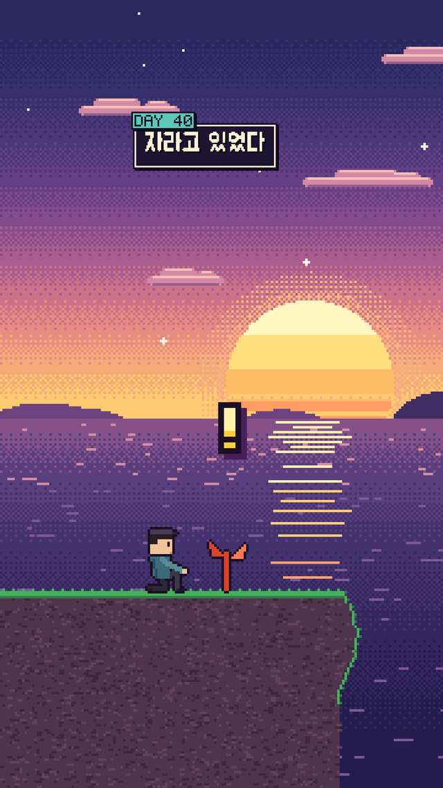
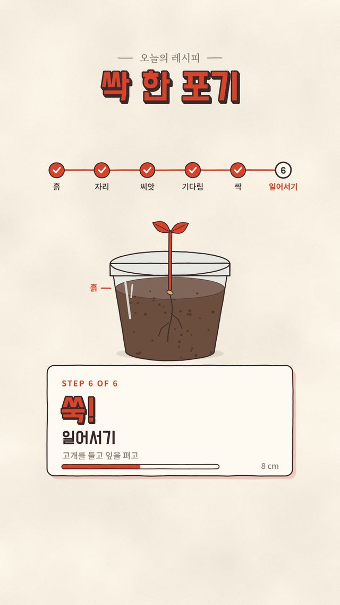
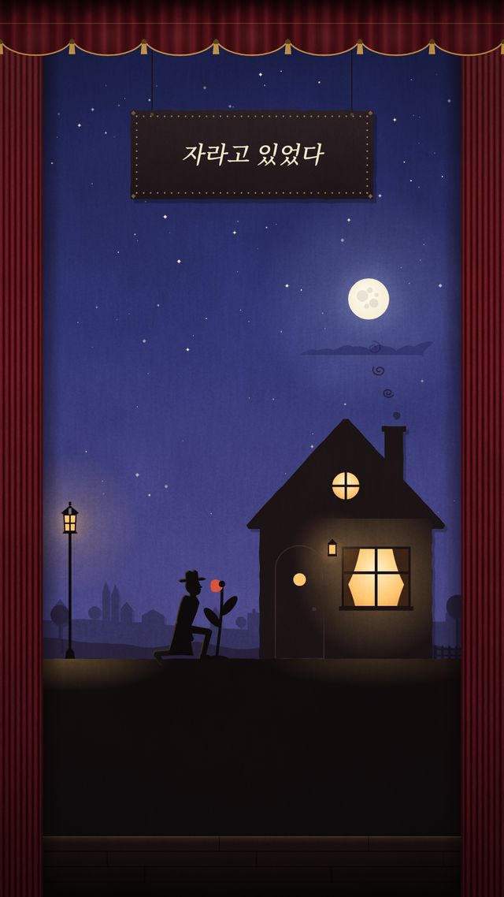
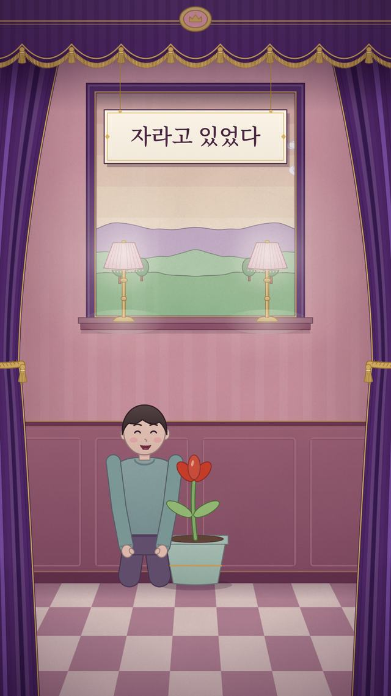
word-log 키트 26 · 세로 쇼츠
word-log의 30초 세로 쇼츠에 쓰인 키트입니다. 장면은 이야기만 갖고 그림은 키트가 그립니다. 처음 네 개(charcoal · hopper · bass · puppet)는 같은 쇼츠 「문」을 네 화풍으로 그렸습니다.
「침묵의 400년」 키트 3 · 가로 · 세로
one-scroll-bible의 3분 영상 「침묵의 400년」을 이 세 키트로 다시 짜고, 스틸 276장이 픽셀 단위로 같은지 비교했습니다. 가로와 세로 모두에 맞춰 구성되어 있습니다.
실제 작품
이 스킬이 처음 만들어진 프로젝트입니다. 스킬의 모든 단계를 이 프로젝트에서 썼습니다.
링크
- SKILL.md 워크플로 · 장면 계약
- 폴더 harness · scripts · player · kits · examples
- README.md 빠른 시작
- references/STYLES.md 21가지 화풍과 그리는 법
- kits/README.md 35가지 키트 · 템플릿 · 키트 만드는 법
- references/SCENE-RULES.md 장면 작성 규칙
- references/SOUND.md ElevenLabs 사운드
- references/I18N.md 다국어 방법과 품질 기준
- references/review-prompt.md 원어민 검수 프롬프트
- references/LESSONS.md 겪은 문제와 해결